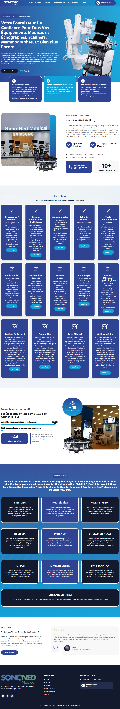
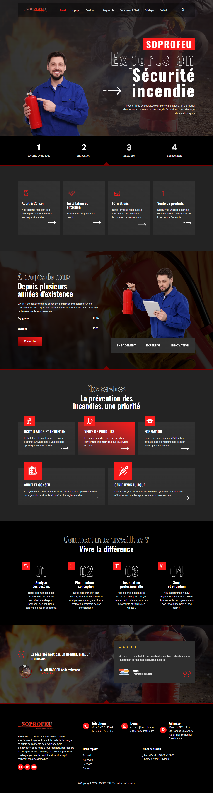

01
Création de Sites Web
Sites vitrines, e-commerce et plateformes sur mesure, rapides, responsives et optimisées SEO dès le départ.
80% de vos prospects cherchent sur Google avant d'appeler. Êtes-vous là quand ils cherchent ? Nous créons des sites qui attirent, rassurent et convertissent — même pendant que vous dormez.
Chaque jour sans site optimisé, c'est un client qui choisit votre concurrent. Voici comment on renverse la tendance.
Sites vitrines, e-commerce et plateformes sur mesure, rapides, responsives et optimisées SEO dès le départ.
Structure technique, contenus ciblés, blog, maillage interne et stratégie locale pour mieux apparaître sur Google.
Campagnes Google Ads, Meta Ads et landing pages pensées pour convertir vos budgets en demandes mesurables.
Calendrier éditorial, visuels, vidéos courtes et contenus qui donnent confiance à votre audience.
Identité visuelle, design d’interface, expérience utilisateur et messages commerciaux clairs.
Chatbots, formulaires intelligents, automatisation des demandes et suivi commercial plus rapide.
La science le confirme : les clients ne lisent pas, ils scannent. Ils cherchent une raison de faire confiance en 8 secondes. Nous concevons chaque site pour gagner ce pari.
Des PME d'El Jadida, Casablanca et d'ailleurs ont transformé leur visibilité digitale. Voici quelques exemples concrets.

Site événementiel premium avec galerie, partenaires et appels à l’action.

Site institutionnel structuré pour présenter missions, organisation et contact.

Site médical B2B avec spécialités, partenaires, preuves et témoignages.

Site industriel moderne pour sécurité incendie, formations et demande de devis.

Positionnement premium, pages services et crédibilité internationale.

Réservation, flotte, avantages, témoignages et formulaire de demande.
Au-delà du design, nous intégrons des preuves, des appels à l’action, des réponses aux objections et des parcours rapides.
Des pages rapides, lisibles et faciles à contacter depuis smartphone.
Des sections organisées pour expliquer, rassurer puis déclencher l’action.
Réalisations, avis, chiffres, secteurs et garanties au bon endroit.
Boutons flottants WhatsApp/appel, formulaire court et réponse rapide.
Des formules adaptées aux entrepreneurs, PME et entreprises qui veulent accélérer leur acquisition.
Une page blog dédiée et des articles complets pour attirer des recherches qualifiées, rassurer les lecteurs et améliorer le référencement.
Une méthode claire pour transformer votre site et votre fiche Google Business Profile en source régulière de demandes locales.
Lire l’article →Les actions concrètes pour rendre votre fiche Google plus visible, plus rassurante et plus rentable.
Lire l’article →Découvrez comment la performance, l’ergonomie mobile et les appels à l’action influencent directement vos demandes clients.
Lire l’article →Des idées concrètes pour utiliser l’intelligence artificielle sans compliquer votre organisation.
Lire l’article →Comment structurer un site multilingue propre pour parler à plus de clients et préserver la visibilité SEO.
Lire l’article →Chaque secteur a ses codes. Voici comment adapter votre site, vos contenus et vos appels à l’action.
Lire l’article →Selon le projet, un site vitrine peut être livré rapidement après validation du contenu. Les sites plus avancés demandent un cadrage plus détaillé.
Oui. La structure, les titres, la vitesse, les balises, les contenus et le maillage sont pensés dès le départ pour le référencement.
Oui. Nous pouvons optimiser la fiche, les catégories, les services, les photos, les descriptions et la stratégie d’avis.
Oui. Le site intègre un système multilingue avec direction RTL pour l’arabe et mémorisation du choix de langue.
Oui. Nous pouvons assurer la maintenance, les mises à jour, le blog, le SEO et les campagnes publicitaires.
Oui. L’audit gratuit permet d’identifier rapidement les actions qui auront le plus d’impact sur votre visibilité et vos conversions.
Vous avez un projet web, une campagne marketing ou une refonte à lancer ? Nous vous répondons rapidement avec une recommandation claire.